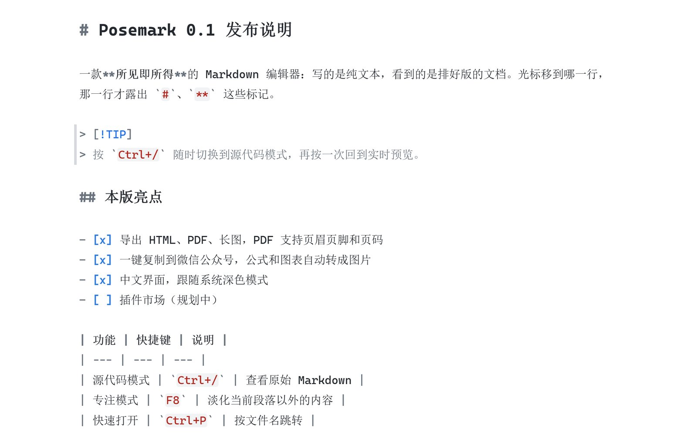

写的是 Markdown，
看到的是排好版的文档
Write Markdown.
Read a finished document.
Posemark 是一款所见即所得的 Markdown 编辑器。标题就是标题，表格就是表格；光标移到哪一行，那一行才露出 #、** 这些标记。
Posemark renders Markdown in place as you type. Headings look like headings, tables look like tables — the # and ** markers only appear on the line your caret is on.
支持 Windows · macOS · Linux，界面支持简体中文与英文Windows · macOS · Linux, with an English and Simplified Chinese interface

专心写，排版交给它Focus on writing, the layout takes care of itself
从笔记、技术文档到公众号文章，常用的 Markdown 写作场景都照顾到了。From notes and technical docs to newsletter posts — the everyday Markdown jobs are covered.
实时预览Live preview
边写边排版，没有左右分栏。表格、代码块、图片都能就地编辑。Typeset as you type, no split pane. Tables, code blocks and images are edited in place.
公式与图表Math and diagrams
KaTeX 公式、公式编号与引用，Mermaid 流程图、时序图随写随画。KaTeX math with numbering and references; Mermaid flowcharts and sequence diagrams drawn as you write.
多种导出Export anywhere
HTML、PDF、长图一键导出。PDF 可设纸张、边距、页眉页脚和页码。HTML, PDF or one long image. PDFs get paper size, margins, headers, footers and page numbers.
复制到公众号Copy for WeChat
一键生成公众号可用的排版，公式和图表自动转图，链接整理成参考链接。One click gives WeChat-ready formatting; formulas and diagrams become images, links become references.
图片管理Image handling
拖入、粘贴截图自动存到 assets；拖动调整大小；支持 PicGo / PicList 上传图床。Drop or paste and images land in assets/; drag to resize; upload through PicGo or PicList.
主题与深色模式Themes and dark mode
内置 5 套主题，可跟随系统深色模式，也能用自定义 CSS 微调。Five built-in themes that follow the system dark mode, plus your own CSS on top.
文件夹工作区Folder workspace
文件树、大纲、全文搜索、快速打开，外部改动自动同步。File tree, outline, folder-wide search and quick open; outside changes show up on their own.
不丢稿Never lose a draft
未保存的修改随时备份，崩溃或断电后可一键恢复；也可开启自动保存。Unsaved edits are backed up continuously and restored after a crash; auto save is one switch away.
公式、图表，写完就看到Formulas and diagrams, rendered as you finish typing
公式块打开时是一个编辑框，下方实时显示渲染结果；Mermaid 图表在你停笔的瞬间重新绘制。A math block opens as a field with the rendered formula underneath; Mermaid diagrams redraw the moment you pause.
$…$、$$…$$、\(…\)多种写法$…$,$$…$$and\(…\)delimiters- AMS 公式编号，
\label/\ref交叉引用AMS numbering with\label/\ref - 化学式
\ce{H2O}与 physics 宏包Chemistry\ce{H2O}and physics macros - 图表可右键另存为 SVG / PNGRight-click a diagram to save it as SVG or PNG

深色模式与大纲Dark mode and outline
浅色、深色各选一套主题，随系统自动切换。左侧大纲面板可折叠、可筛选，当前所在章节始终高亮，点一下即可跳转。Pick a light and a dark theme and let the system switch between them. The outline panel on the left folds, filters, keeps your current section highlighted and jumps on a click.

随时切回源代码Source code, one shortcut away
按 Ctrl + / 进入源代码模式：等宽字体、语法高亮，标题按级别放大，代码块和引用依然一目了然。Press Ctrl + / for source mode: monospace, syntax-highlighted, headings sized by level, fences and quotes still easy to spot.

导出得体的 PDF 与网页Exports that look the part
导出主题、默认文件夹、纸张、边距、页眉页脚、页码、一级标题分页，都集中在「偏好设置 › 导出」里，也能在文档的 front matter 里单独指定。Export theme, default folder, paper, margins, headers, footers, page numbers and page breaks all live under Preferences › Export — and every document can override them in its front matter.
- HTML 自包含，可带可折叠大纲Self-contained HTML, optional outline panel
- 整篇导出为一张长图The whole document as one long image
- 作者、关键词写入 PDF 属性Author and keywords in the PDF properties

一键复制到微信公众号Copy straight into WeChat
公众号会丢掉所有样式表，Posemark 把排版写成行内样式再放进剪贴板。左边挑样式、强调色、字号和行距，右边的手机预览立刻显示粘贴后的效果，公式和图表自动转成图片。WeChat's editor drops every stylesheet, so Posemark writes the formatting as inline styles. Pick a style, accent colour, font size and spacing on the left; the phone preview on the right shows the pasted result at once, with formulas and diagrams turned into images.

下载 PosemarkDownload Posemark
完全免费，没有账号、没有广告、不收集数据。Free, with no account, no ads and no data collection.
Windows
Windows 10 / 11（x64）。从微软商店安装可自动更新。Windows 10 / 11 (x64). Install from the Microsoft Store for automatic updates.
macOS
Apple 芯片与 Intel 芯片各一个 dmg。首次打开请右键选择“打开”。Separate dmg files for Apple silicon and Intel. The first time, right-click the app and choose Open.
Linux
x64 的 AppImage（多数发行版直接运行）和 deb（Debian / Ubuntu）。x64 AppImage (runs on most distributions) and deb (Debian / Ubuntu).
所有版本都在 GitHub Releases 发布，源代码以 MIT 许可开放。Every build is published on GitHub Releases; the source is MIT licensed.